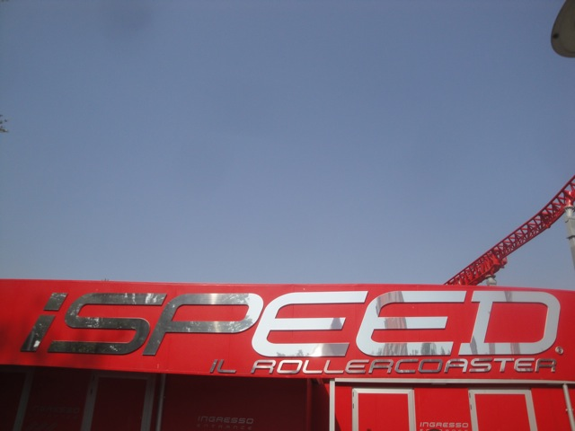
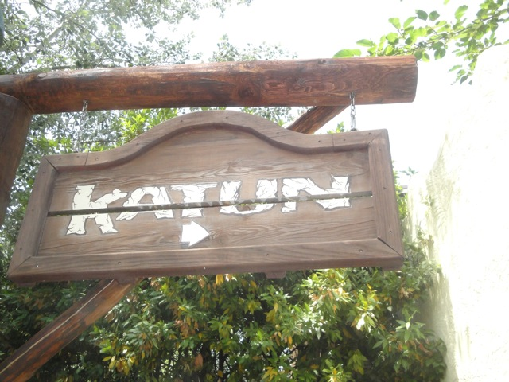
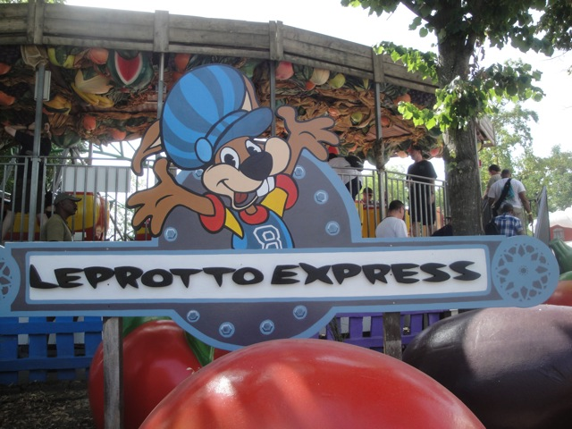

| |
Mirabilandia Review
Mirabilandia is a really nice, really fun amusement park that is my personal favorite in Italy, as well as one of the better amusement parks in Europe all together. The main draw of this park for coaster enthusiasts is pretty obvious. Mirabilandia has one of the best, if not the best, two-for-two deal of roller coasters in the world. No, I'm serious. Katun and Ispeed are both some of the best coasters on the planet. Ispeed alone is just mouth-watering. It's easily in my Top 5 favorite coasters. It is just SO F*CKING GOOD!!! And Katun, another really fine coaster. My 2nd favorite B&M Invert and easily one of the best coasters that B&M have ever designed. So yeah, these two coasters are the primary reasons that coaster enthusiasts will gush over Mirabilandia, and yeah. It's a damn good reason to visit the park. But even aside from those two coasters, Mirabilandia is still a really well park. The other coasters that the park has are a really good fit for the park. True, the rest of the coasters there aren't anything special. They're just family coasters, well aside from Divertical. The best Water Coaster as far as I'm concerned. And even outside roller coasters in general, Mirabilandia has a great mix and a great variety for everyone who visits the park. The entire park just has this really great balance. So even if you're not into major roller coasters, you'll still find plenty to do at Mirabilandia. And if you are, well this park has two of the finest roller coasters in the world. I would definetly take the effort to visit this park next time you plan on visiting this part of Italy.
Rollercoasters
There is a link to a review of all the Rollercoasters at Mirabilandia.
Top Coasters
Ispeed Review

Katun Review

Decent Coasters
Divertical Review

Family Coasters
Gold Digger Review

Master Thai Review

Kiddy Coasters
Leprotto Express Review

Powered Coasters
Explorer Review

Flat Rides
Here are the reviews of all the Flat Rides at Mirabilandia. While none of the flat rides are amazing, there is a wide variety at the park. So lets move on and start out with their drop tower. The drop tower itself is nothing special, but the theming and history of this ride is very interesting. The ride originally opened up in the 90s as the Twin Towers due to the fact that the ride looked like the famous buildings in New York City. However, they had to change the name after the September 11th Attacks. So they decided to rename the ride "Space Shuttle Columbia". Oops. =) Guess this ride has a curse. And aside from that none of the other flat rides are that interesting. The music express with a cover is fun, but that's literally the only other flat ride I bothered to ride. The rest of the flat rides consist of a bouncy bouncy ride, a fun house, a carousel, teacups, a bigass ferris wheel, and a couple of other weird flat rides.
Can I propose that you rename this and call it "Congress: The Ride"? =)
Dark Rides
Mirabilandia has one shooting dark ride in the park, and I have to say. It's a good one. I'm not entirely sure of what the story is about. What I do know is that the ride takes place after the apocalypse in New York City and you have to shoot at...I don't exactly know what. All I know is that this is definetly one of the better dark rides. Most shooting dark rides don't have a good theme. They're usually just some haunted house where you're just shooting at ghosts. So all the apocalyptic theming definetly gave it an extra touch that I really liked. So definetly give it a ride when you go to Mirabilandia. Besides, it has air conditioning, which is really useful on hot Italian Summer days.
 Between the destroyed Apocalypse New York City shooting dark ride and the World Trade Center themed Drop Tower, this park really must not like New York City.
Between the destroyed Apocalypse New York City shooting dark ride and the World Trade Center themed Drop Tower, this park really must not like New York City.
Water Rides
I rode both of the park's water rides, and they were all right. Their shoot the chutes ride is one of the bigger ones. It was fun. Nothing special, but it was fun. If I want to be nice, its one of the bigger ones. So that's good. Their rapids ride is also really fun. It may not have any drops or particuarly crazy rapids, but it is located in the shade, it does get you wet, and they do have these free water cannons that you can use to soak people on the ride with. And if you know me, you know just how much fun those can be. Too bad people actually enjoy it here since its like 32 degrees C (90 degrees F) in the summer here in Italy. But hey, from my years of experience working on a rapids ride, people for some reason don't want to get wet even on hot summer days after they waited hours for a water ride. So who knows. Maybe you'll get lucky and get yourself an Italian Pink Sweater Girl to scream at you. Couldn't hurt to try since the cannons are free after all.
 Hey, if the people scream and get offended that I soaked them, I could do this for hours. =)
Hey, if the people scream and get offended that I soaked them, I could do this for hours. =)
Dining
The dining at Mirabilandia is not the best per se, but the European parks in general tend to have better dining, and this trend is true for Mirabilandia. I forget exactly which resteraunt I ate at, but it had some good stuff. Like all the Italian parks, they had a nice spread. The lunch consisted of Rigatoni Pasta, Fries, and Lemon Merignue Pie. The fries were meh, the pie is pie, which is always good. And when you're in Italy, you know that the pasta is going to be good. So I'm a fan of the dining here, but that's mainly because I'm a fan of Italian Cuisine in genereal.
Gotta hand it to Italians on their pasta.
Theming and Other Attractions
Here are the reviews of all the other stuff at Mirabilandia. As far as theming goes, there's almost none at all. I mean, there's a little bit here and there. Katun has a little bit of Mayan theming. Ispeed and Divertical have a little bit of a racing theme. There's a little bit of Western Theming in the park. But overall, this is an amusement park. Not a theme park. So don't go in expecting any lands or anything. As far as other stuff to do, Mirabilandia has an intersting selection. The main thing I know of is that they have this really cool stunt show. I was going to see it, but missed it thanks to the fact that I'm a credit whore. But I heard that it was really good. But the real star attraction as far as other attractions go would be with Phobia, the park's haunted walkthrough. Yeah, Europe has these things year round. You get in a conga line and get scared. It's typical, but I enjoyed it. Just be warned that this is an upcharge.
 Oh those pesky tourists and their prone to getting lost.
Oh those pesky tourists and their prone to getting lost.
In Conclusion
Mirabilandia is a fantastic park and one of the best in all of Europe. Not only because of the amazing roller coaster collection that they have in the park (though that certainly helps), but the entire park just has this really nice balance. There is plenty for everyone to do. There are plenty of water rides to cool off in the Italian heat, there's some really well made haunted walk throughs, a great dark ride, two of the best roller coasters on the planet, among all sorts of other cool things. It just has that perfect and beautiful balance. It all blends so well. It's just a fantastic amusment park that you need to check out next time you're in Italy. And trust me! I'd be saying that even if Ispeed wasn't at the park. Ok, I wouldn't be quite as eager and excited about the park (ISPEED IS SO F*CKING GOOD!!!), but it's still a great amusmenet park regardless.
Enthusiast FAQs.
*Are there kiddy coaster restrictions? - Nope. You can ride the kiddy coasters here.

Tips
*Ride both Ispeed and Katun multiple times.
*Drink lots of water.
*Get the Fast Pass. This one doesn't have a merge point. =)
*Have Fun!!!!
Theme Park Category:
Amusement Park
Location
Savio, Emilia-Romagna, Italy
Last Day Visited
June 20, 2012
Video
My video camera was malfunctioning when I visited. So I'll have to go back to shoot the footage for the video (which I have no problem with).
Complete Update List
2012
TPR's Mega Europe Trip
Here's a link to the parks website.
Home
|